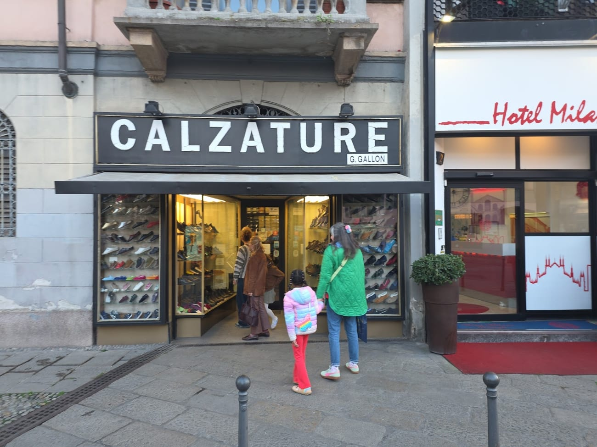
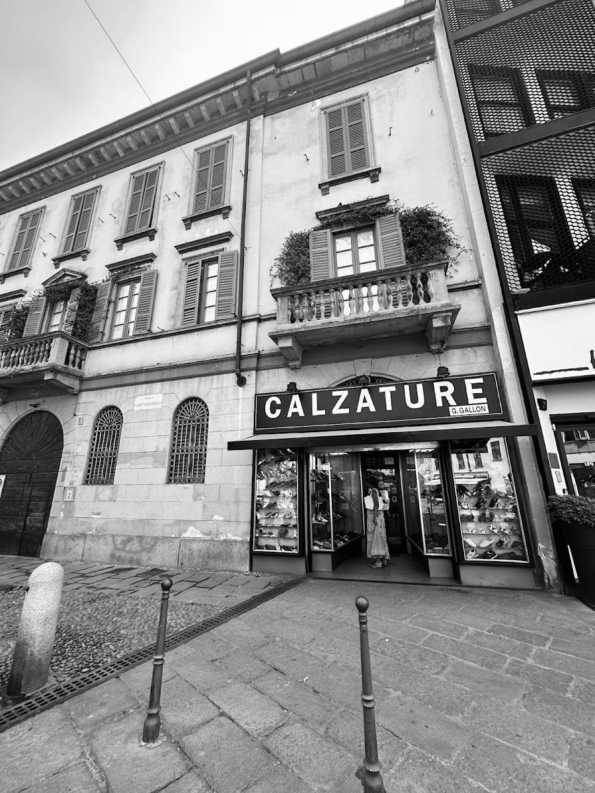
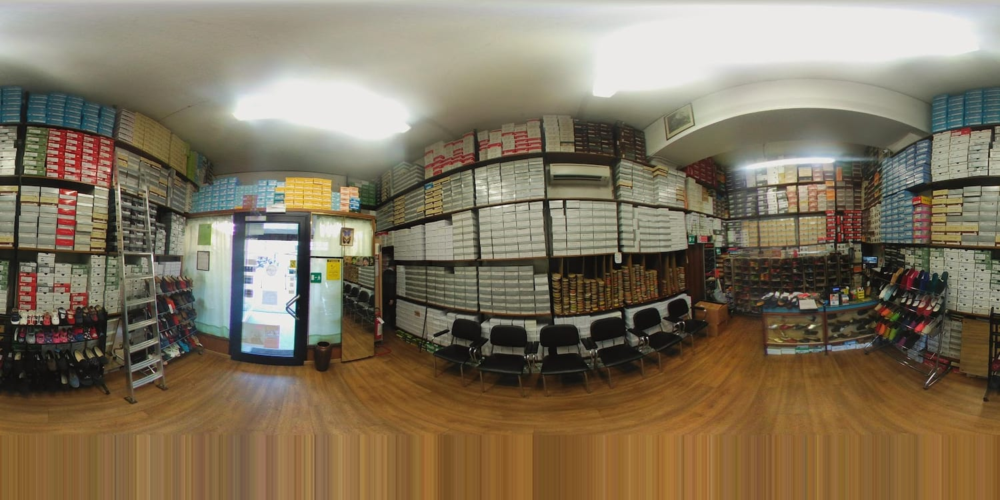
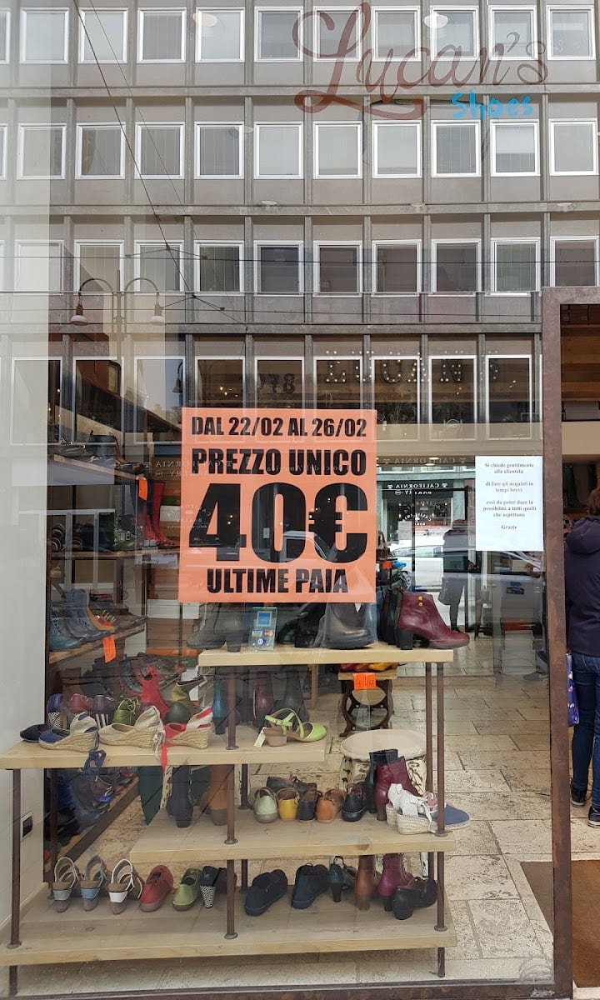

Le friulane vere, dal 1955.
Uno dei pochi negozi di Milano con le autentiche friulane fatte a mano — e con le scarpe classiche di sempre, a un prezzo giusto.


Settant'anni sulla piazza
Un negozio «vecchio stampo», dove sembra di tornare indietro nel tempo — e infatti è qui dal 1955.
La famiglia Gallon apre le sue calzature in Piazza Sant'Eustorgio, a due passi dalle Colonne di San Lorenzo. Da allora la strategia è sempre la stessa: qualità e artigianato a un prezzo giusto.
Oggi il negozio è alla terza generazione. Le vetrine piene, le sedie per provare le scarpe con calma, il proprietario che ti conosce: uno degli indirizzi più iconici e storici della città.
La friulana, quella vera
La friulana — «furlane» in dialetto — è un'antica pantofola di velluto nata nelle campagne del Friuli: tomaia cucita a mano, suola morbida, tempi lunghi e piccole quantità. Da Gallon si trovano quelle autentiche, fatte da artigiani come una volta, portate in centro a Milano a un prezzo onesto.
Cosa trovi da Gallon
Scarpe di qualità, in pelle vera, a prezzi giusti — dal 1955.
Le friulane
Le autentiche pantofole di velluto fatte a mano, in tanti colori — il nostro pezzo forte.
Le espadrillas
Leggere e colorate per l'estate, in tante misure e tinte.
Le scarpe classiche da uomo
Un'ottima selezione di calzature classiche in pelle, a prezzi competitivi.
Gli stivaletti in pelle
Vera pelle italiana per l'inverno — comodi e fatti per durare.
Il negozio


Negozio vecchio stampo, sembra di tornare indietro nel tempo. Buona scelta. Famosi per le friulane a un prezzo giusto.
Un venerabile negozio di scarpe italiano che frequento da 38 anni. Mia figlia ha ricevuto qui il suo primo paio di scarpe: un'esperienza davvero eccezionale.
Adorabile negozietto, gentili e disponibili. Mi sono presa un bellissimo paio di stivali in pelle italiana per soli 75 euro.
Gentilissimi, scarpe di ottima qualità in pelle vera a prezzi giusti. Il proprietario disponibile e gentile.
Dove siamo
Buono a sapersi
Sì: da Gallon trovi le autentiche friulane in velluto, cucite a mano da artigiani secondo la tradizione, in tanti colori — a un prezzo onesto.
Dal 1955, sempre in Piazza Sant'Eustorgio. Oggi siamo alla terza generazione della famiglia Gallon.
Espadrillas, scarpe classiche da uomo in pelle, stivaletti in pelle italiana e calzature di qualità per tutti i giorni, a prezzi competitivi.
Lunedì 15:00–19:30; da martedì a sabato 09:30–13:00 e 15:00–19:30. Domenica chiuso.
In Piazza Sant'Eustorgio 4, alla fine del Corso di Porta Ticinese, a due passi dalle Colonne di San Lorenzo.